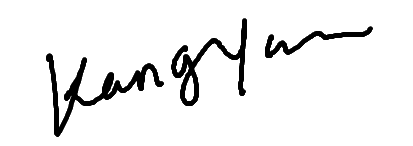

Kang Yan , M.S.
Rapid MRI Research Group @ MeyerLab
Contact:
: wrr6ps@virginia.edu
: (434)-242-1476
: Charlottesville, VA


I am currently a third-year Ph.D. student, studying Magnetic Resonance Imaging in Department of Biomedical Engineering at the University of Virginia, under the supervision of Prof. Craig. H. Meyer . Before enrolling in the Ph.D. program at UVA, I worked in Prof. Yiping P. Du's lab at Shanghai Jiao Tong University as a master student on pulse sequence development of non-Cartesian trajectory and advanced image reconstruction. Outside of academia, I enjoy traveling, reading, watching movies, hiking, swimming, and skiing. #GoWahoo!
I am interested in MRI acquisition and reconstruction, in particular:
Tags: [Spiral][Diffusion][Low Rank][Deep Learning][MRgFUS]